Открыть модель
Кнопка «Локально» справа вверху или перетаскивание файла прямо в окно. Можно выбрать сразу несколько файлов — они соберутся в одну сводку. Ничего никуда не загружается: разбор идёт в браузере.
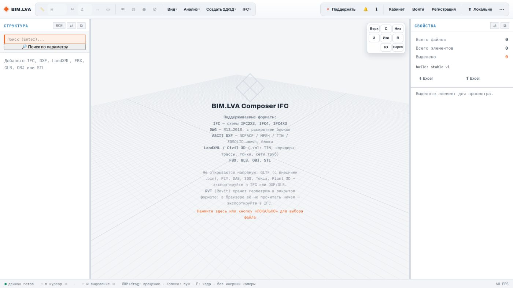
Что открывается
OBJ · STLобычная 3D-геометрия
⋯ есть
«Фильтр при загрузке IFC»: пресет отсекает арматуру, метизы и мебель
ещё до загрузки, и памяти уходит заметно меньше. Пресет действует на
следующие открываемые файлы, а не на уже загруженные.
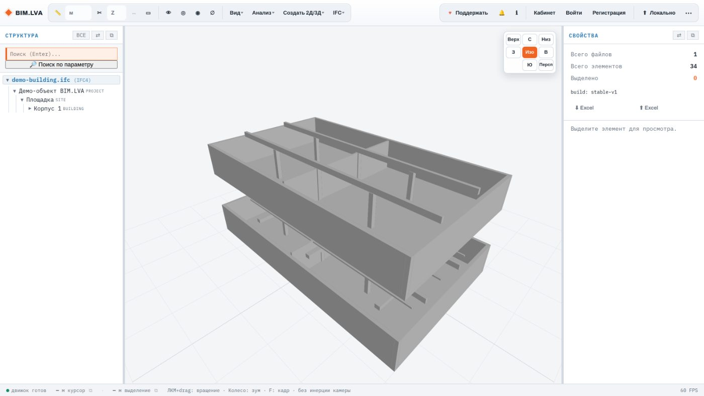
Навигация и виды
Вращение — левой кнопкой, зум — колесом, причём по умолчанию к точке под курсором, как в Navisworks и BIMvision. Куб видов в правом верхнем углу даёт шесть стандартных направлений и переключает проекцию.
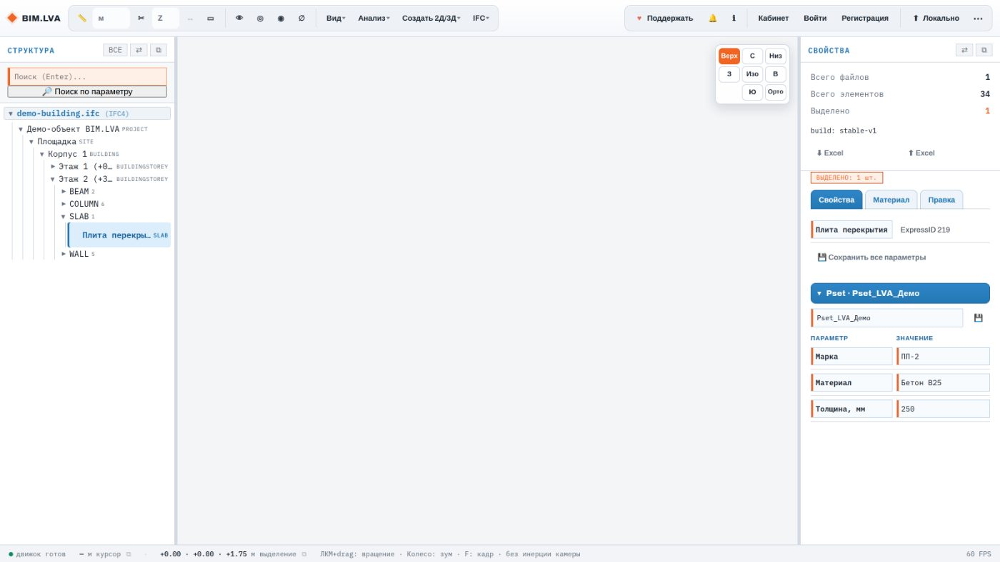
Меню «Вид»
F при выделении наводится на выделенное.WASD, с выбором вида камеры вплоть до кабины.0.01–0.05.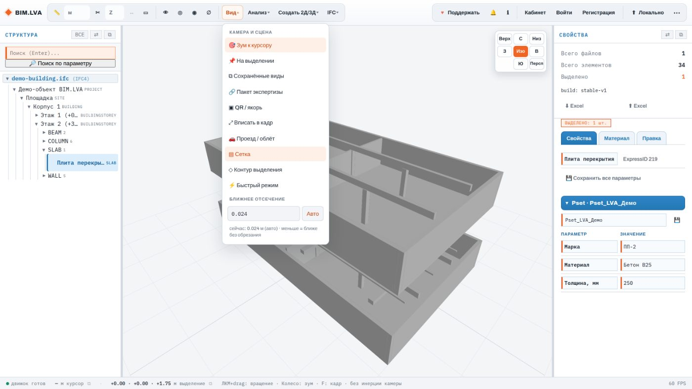
Выделение и свойства
Клик по элементу — в сцене или в дереве. Панель справа показывает имя, класс, ExpressID и все наборы характеристик, причём значения можно править прямо в ней и сохранять обратно в IFC.
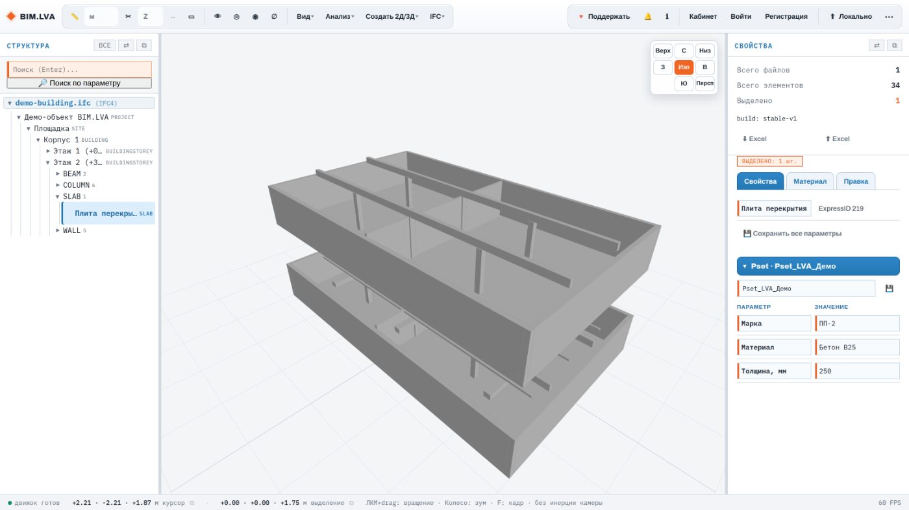
Pset_LVA_Демо с параметрами, доступными для редактирования.Способы выбрать
C — снять выделение.Enter.Что можно сделать с выделенным
Замеры и разрезы
Рядом с кнопкой «Замер» — выпадающий список режимов. Точки прилипают к геометрии: вершины, середины и рёбра (переключается в меню «Создать 2Д/3Д» → «Привязка к элементам»).
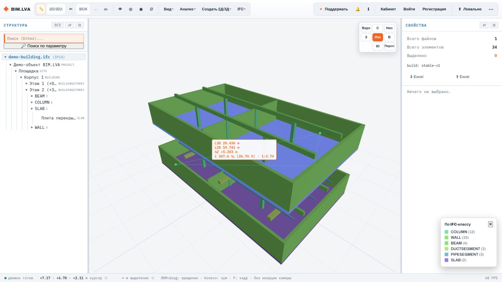
1:n.Режимы замера
| Режим | Что меряет |
|---|---|
| м | Расстояние между двумя точками |
| 2D/3D/i | Наклонное и горизонтальное расстояние, превышение, уклон |
| ∑ | Цепочка: сумма отрезков подряд |
| ΔZ | Перепад отметок |
| ∠ | Угол по трём точкам |
| м² | Площадь по контуру |
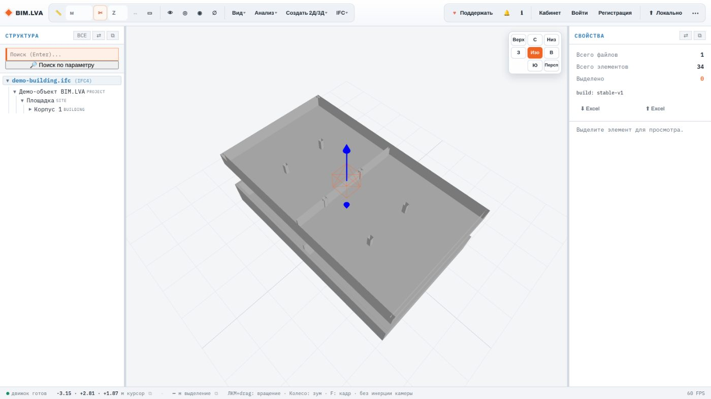
X и Y дают вертикальные разрезы.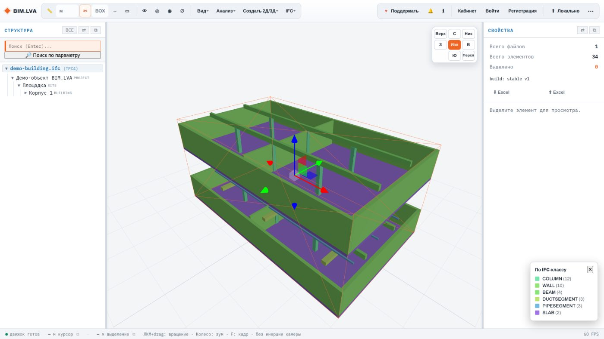
↔ рядом переключает ручки между сдвигом и растяжением коробки.Видимость
Четыре кнопки в шапке и фильтр по классам закрывают почти все ситуации «убрать лишнее с экрана».
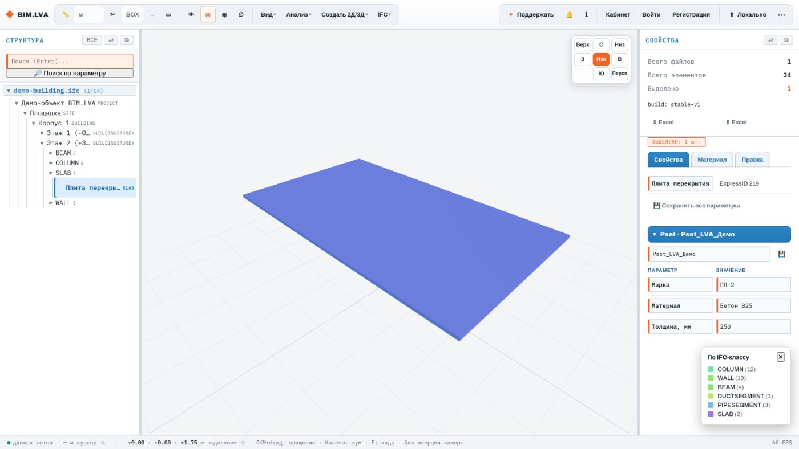
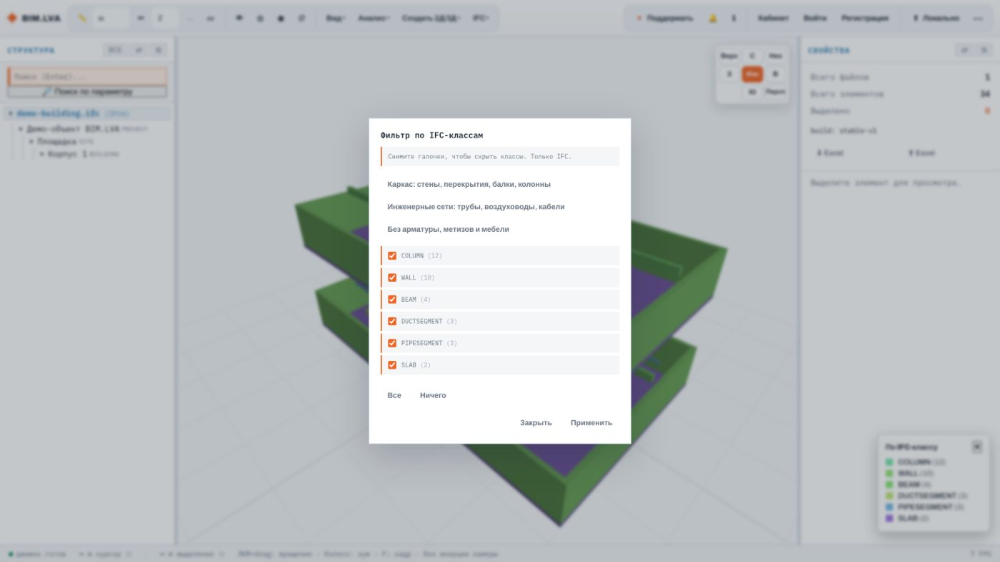
Анализ модели
Меню «Анализ» — самая содержательная часть: раскраска, коллизии, замечания, сравнение версий, координаты.
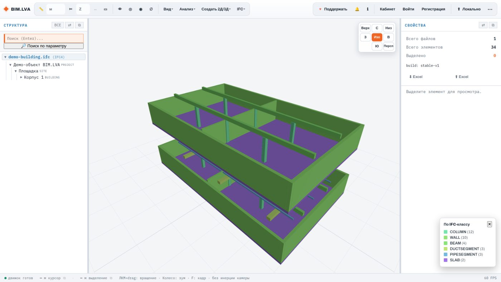
.bcfzip формата BCF 2.1 — открываются в Navisworks, Revit, Solibri.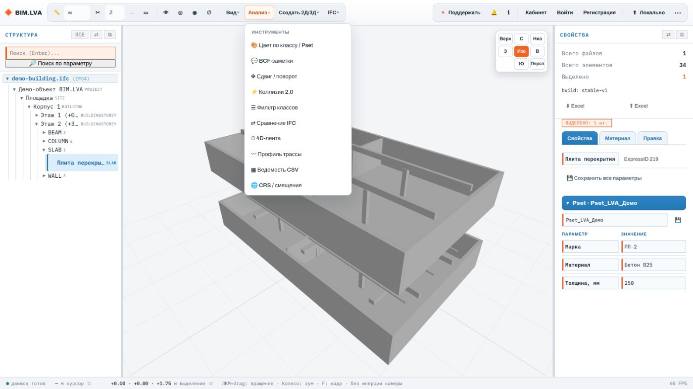
Черчение 2D/3D
Просмотрщик умеет не только смотреть: по модели можно ставить метки координат, чертить полилинии и выдавливать по ним тела — а потом выгрузить всё в DXF в мировых координатах.
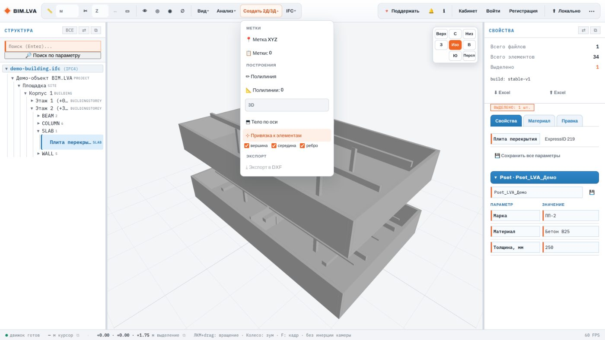
Esc — закончить. Режим 3D берёт настоящие отметки, 2D кладёт все точки на отметку первой.Выгрузка и другие источники
Меню IFC отвечает за файл на выходе, меню ⋯ —
за всё остальное: облако, растры, карта-подложка.
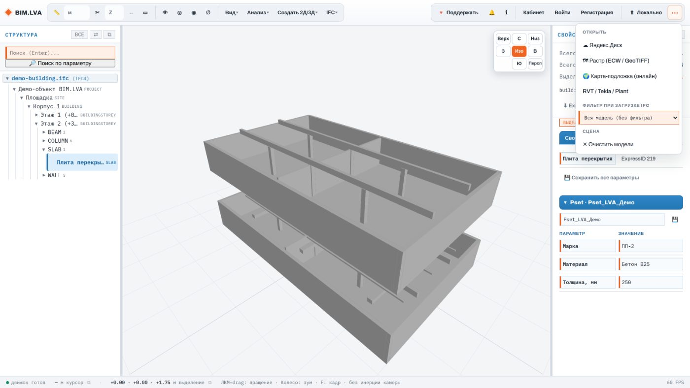
⋯: источники, фильтр классов при загрузке и очистка сцены.Если что-то не так
Замечание тем полезнее, чем меньше его придётся уточнять. Три вещи, которые стоит приложить.
ℹ в шапке. Одна строка — но без неё непонятно, воспроизводить ли ошибку вообще.🔔: все сообщения сессии, включая те, что уже закрылись сами. Часто там лежит настоящая причина.Горячие клавиши
Работают и в латинской, и в русской раскладке.
| Клавиша | Действие |
|---|---|
| F | Приблизить к выделенному |
| C | Снять выделение |
| I | Изолировать выделенное |
| Shift + I | Показать всё |
| Ctrl + H | Скрыть выделенное |
| M | Замер |
| B | BCF-заметки |
| Shift + C | Коллизии |
| Delete | Удалить выделенное |
| Esc | Завершить черчение полилинии |